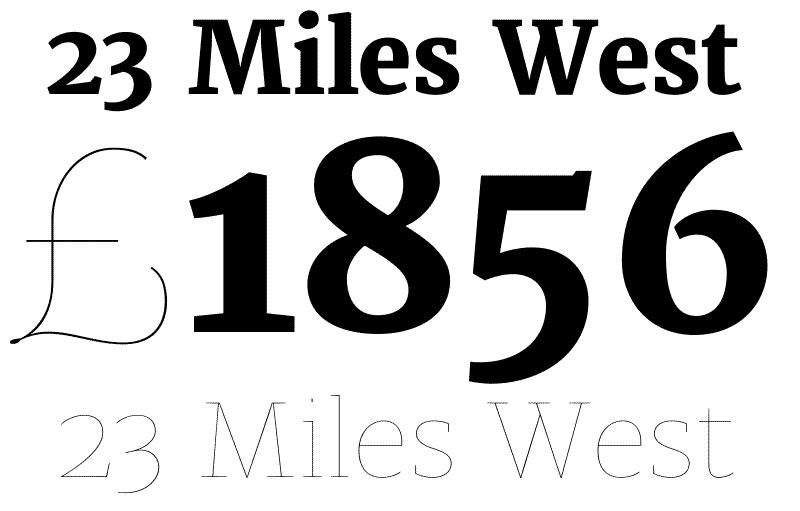
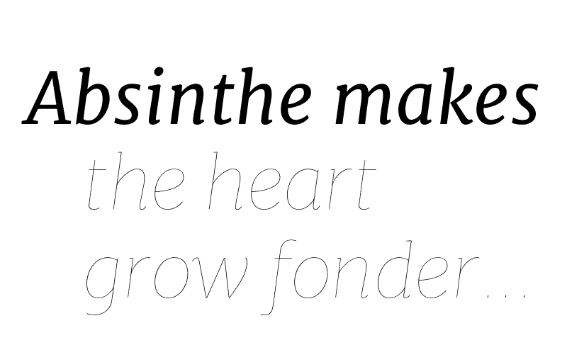
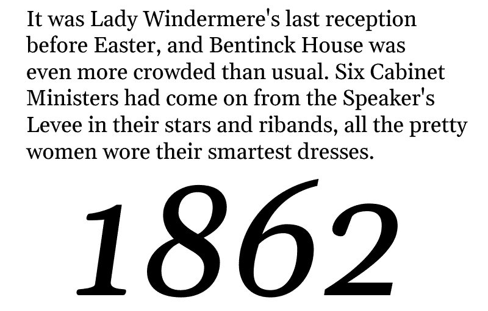
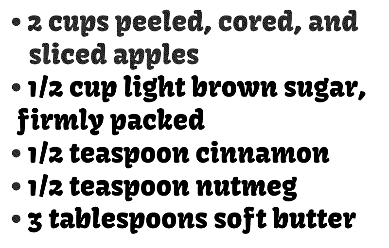
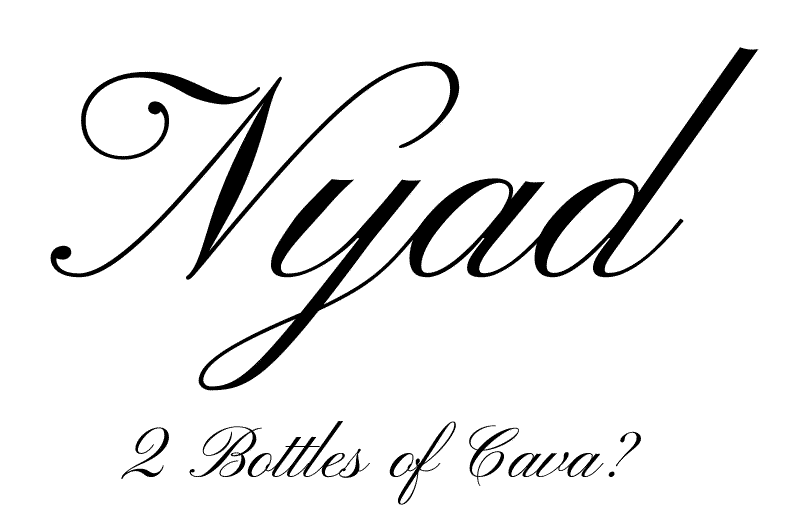
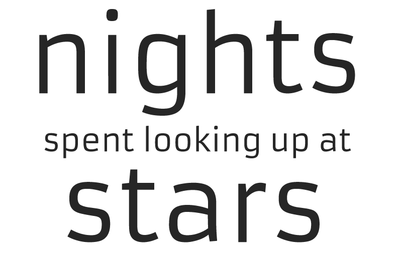
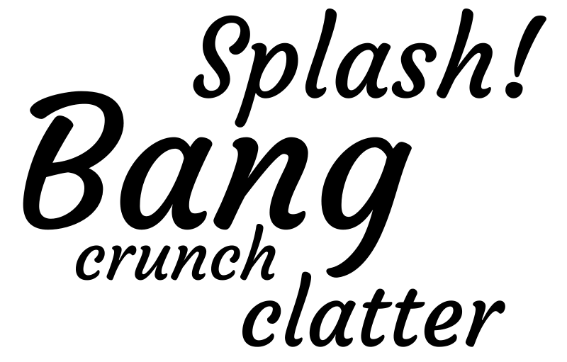
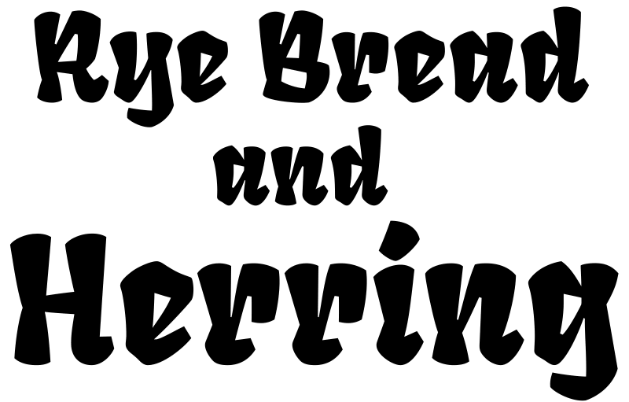

Merriweather

The original Merriweather was released before TTFA was available to hint fonts with. The next release of Merriweather is optimized to take full advatage of the hinting ability in TTFA. The new Merriweather also has a much larger glyph set than the original font had.
Designed by Eben Sorkin.
Merriweather Italic

Merriweather Italic will come in 4 weights carefully designed and tested to be compatible with Merriweather.
Designed by Eben Sorkin.
Merriweather Sans

Merriweather Sans is the companion to Merriweather. It comes in 4 weights designed specially for screens. The classic structure provides a notable difference from other Google Fonts. Merriweather Sans was developed using TTFA rapid test design solutions. As a result, Merriweather Sans was designed to ensure excellent Windows rendering.
Designed by Eben Sorkin.
Gelasio

Gelasio is designed to be metrics compatible with Georgia. Gelasio is a "Reale" or Transitional design with many style cues coming from the period immediately after the Romain du Roi type was introduced. Despite sharing common letter widths the texture and feeling of the two typefaces are different. Georgia is warmer and friendlier while Gelasio is cooler and more formal.
Designed by Eben Sorkin.
Kavoon

Kavoon is a display face based on experiments with brush and ink. Kavoon's expressive features make words vivid and powerfully draw the reader in. Kavoon may be used from medium to large sizes.
Designed by by Viktoriya Grabowska.
Pinyon Script

Pinyon Script is a romantic round hand style font offering confident swashes in its capitals. These swashes somehow give the type a feeling suggestive of the American West giving it a friendly accessble feeling. Pinyon Script was optimized to work in windows based web browsers. Pinyon Script's lovely small details, high stroke contrast and slanted shapes make it best suited for use at larger sizes.
Designed by Nicole Fally
Armata

Armata is a low contrast sans serif text face. In Aramata offers the familiar aesthetic steadiness and strength we usually want from a sans design. Armata also offers with innovative and delicate gestures that serve to give it a distinct voice. Armata can be used in a wide range of sizes. This site is set in Armata.
Designed by Viktoriya Grabowska
Courgette

Courgette is a brushy medium to low contrast italic script. This kind of style traditionally used for display and unsuprisingly Courgette works well in display. However Courgette's is more versitile than that. Its carefully made forms mean that it also works well in smaller sizes and even in massed text. The Sorkin Type Logo is composed from glyphs in Courgette.
Designed byKarolina Lach
Fruktur

Fruktur initially appears to be a playful and powerful black letter type with a warm friendly feeling. However its construction is closer to that of an upright italic. Fruktur offers some of the feeling of a black letter but with higher legibility and greater utility than is typical of black letter type. Fruktur will be most useful from medium to large sizes.
Designed by Viktoriya Grabowska
Donegal

Donegal is a distinctive text typeface designed to be highly legible when reading in web browsers. In larger sizes the details of Donegal's design emerge. Donegal was optimized to work in windows based web browsers.
Designed by Gary Lonergan
About these samples
While this page is definitely not a complete list of all of the Google web fonts and certainly not of all the Sorkin Type projects now underway, it does offer a partial cross section of upcoming and released fonts from Sorkin Type.
Future Releases
Fonts we expect to make public in the next 6 months includes:
A new Merriweather with a new italic and Merriweather Sans and Italic by Eben Sorkin
Fruktur and Kavoon by Viktoriya Grabowska
Tauri and Calistoga Yvonne Schüttler
Aplous and Nisos by Spyros Zevelakis.
Sorkin Type also expects to begin offering expanded font families based on many of the free Google Fonts. These expanded families will have a larger number of styles and Open type features. You can expect new font families to be introduced as well.
For more information or to express your interest in particular project please contact us.
Sorkin Type on Google Fonts
Many of the fonts we made for Google are the result of working with a collaborating designer. After these fonts were designed Sorkin Type tested, optimized and mastered them to Google internal web font standards. Oswald was developed without Sorkin Type but will be released as a commercial Sorkin Type font family.